— Highlight film
— Madeira, Portugal
Mimi & Casey
Your wedding films, your files and a few photographs, all together on one private page, made for you.
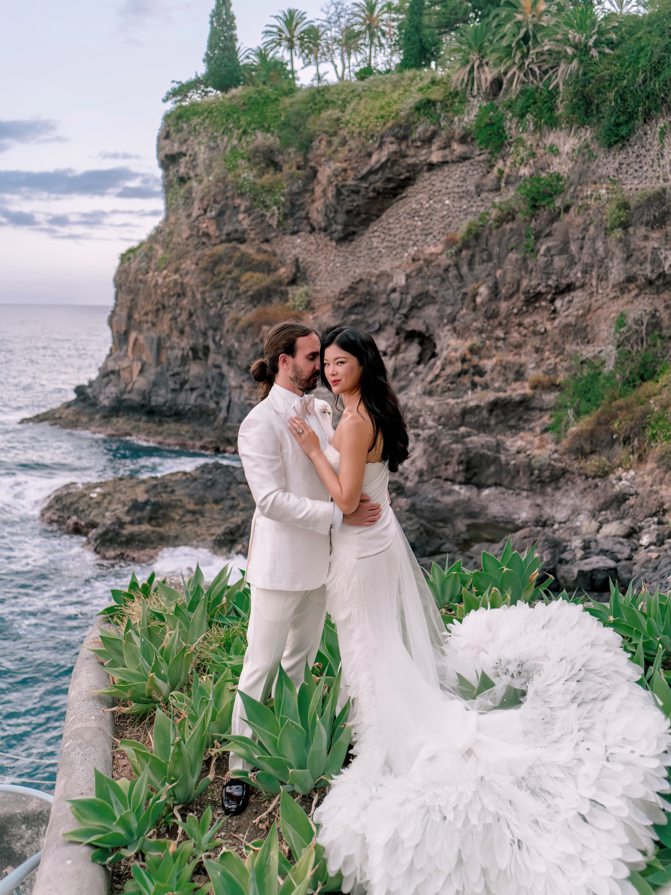
— Thank you
Dear Mimi and Casey,
Thank you for the trust you placed in us. You let us follow you through every moment of your wedding weekend in Madeira, and we are deeply grateful for it. It was an honour to film your wedding.
This page was made just for you. Here you will find your personal links to watch your films, and to download your files as often as you like and keep them forever. Everything is below, in the order you will want it: first to watch, then to download, with a few photographs from your wedding at the end.
With all our gratitude,
Kevin · Chromata Films
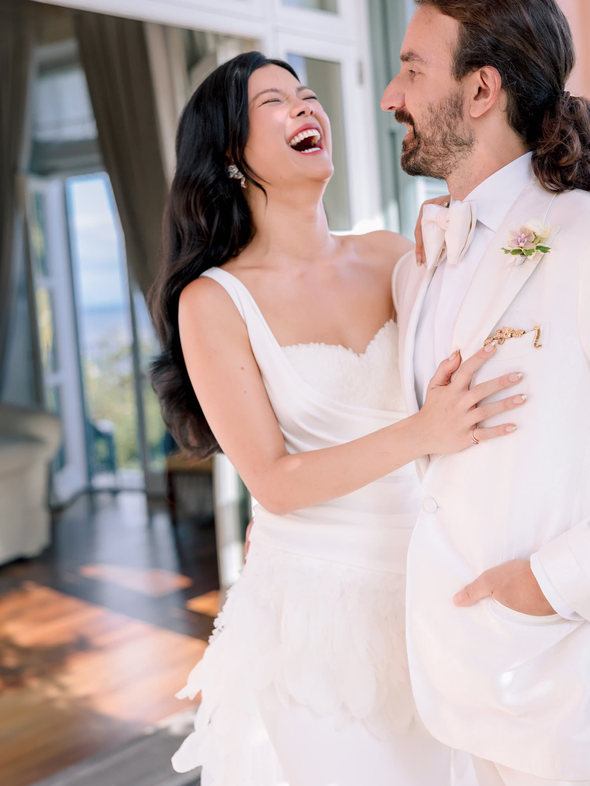
— 01 · Watch
Your films
Press play, turn the sound up, and go full screen. For the best experience, watch them on the biggest screen you have.
— 02 · Download
Your files
Each film is a single MP4 file, in full quality. Download them as often as you like, and please keep a copy on your computer and another on an external drive or in your cloud storage.
-
Film · MP4
Wedding highlight film
Your highlight film, in full quality.
-
Vertical · MP4
Instagram teaser
The short vertical teaser, ready to post or share from your phone.
— On your phone
Save a film to your phone
iPhone and iPad
- Tap Download next to the film you want.
- Safari asks whether you want to download the file. Tap Download.
- Tap the ↓ icon at the top right of Safari, then tap your film.
- Tap the Share button, then Save Video. The film is now in your Photos app. It is also kept in the Files app, under Downloads.
Android
- Tap Download next to the film you want, and confirm if Chrome asks.
- When the download is complete, tap the notification, or open Files and go to Downloads.
- Your gallery app (Google Photos for example) will show the film alongside your other videos.
Tips: use Wi-Fi, because the files are large. If you opened this page from WhatsApp, Instagram or an email app and nothing downloads, open the link in Safari or Chrome instead.
— On your TV
Watch on the big screen
Option 1 · Send it from your phone
- Save the film to your phone first (see "On your phone").
- Apple TV or an AirPlay TV: open the film in Photos, tap Share, then AirPlay, and choose your TV.
- Android TV, Google TV or Chromecast: open the film in Google Photos and tap the Cast icon.
Option 2 · A USB stick
- Download the film on a computer and copy it to a USB stick. Format the stick as exFAT, because the older FAT32 format cannot hold files larger than 4 GB.
- Plug the stick into your TV or TV box, open its media player or USB source, and choose the film.
Your phone and your TV box must be on the same Wi-Fi network for AirPlay and Cast. You can also use the AirPlay or Cast icon of the player above to send a film straight to your TV.
— 03 · Photographs
A few frames
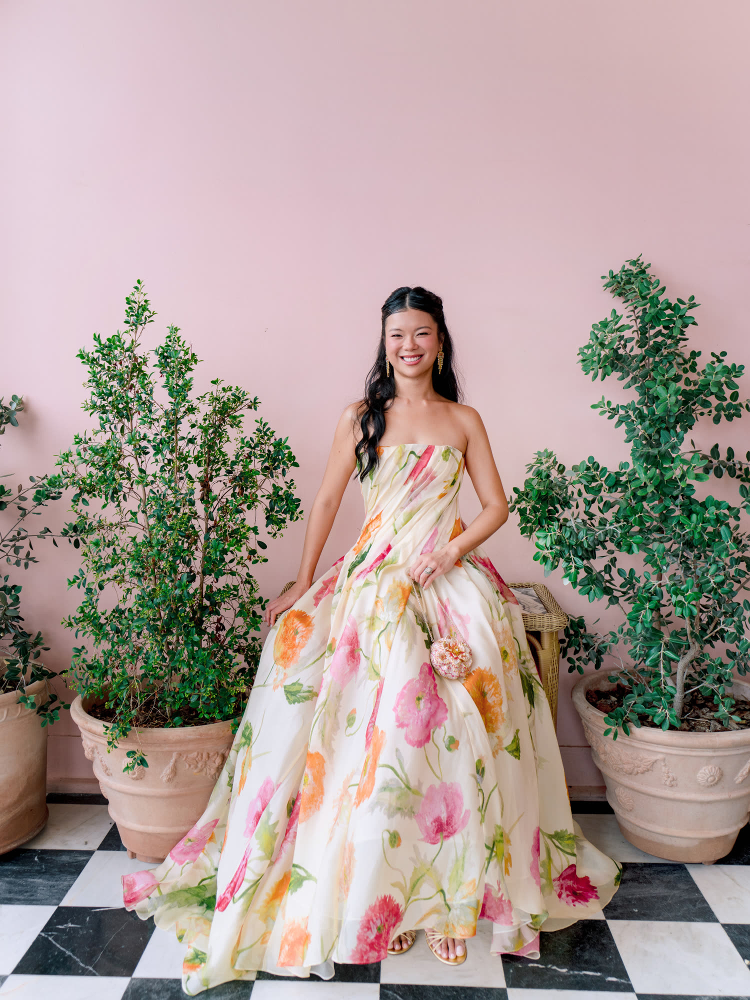
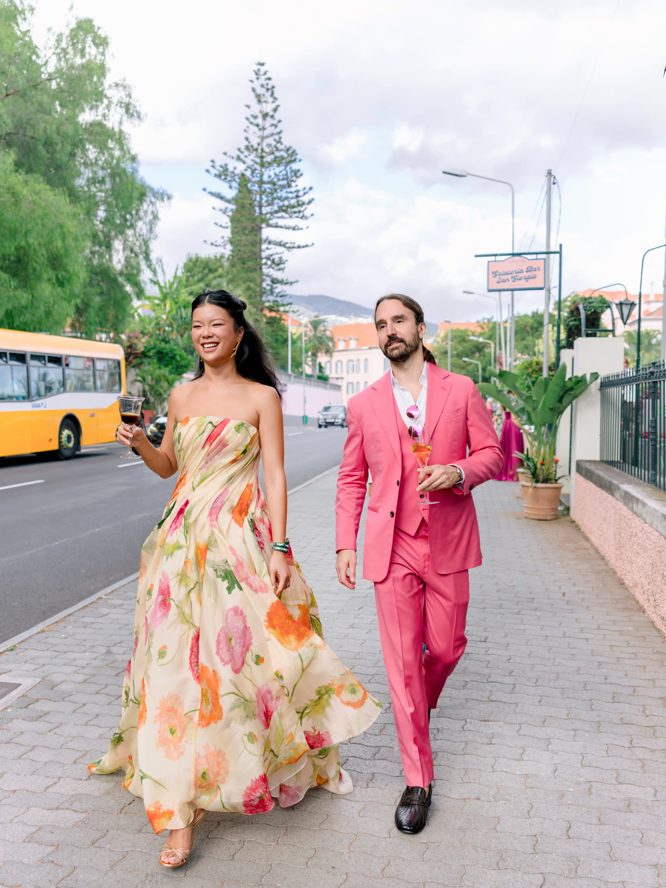
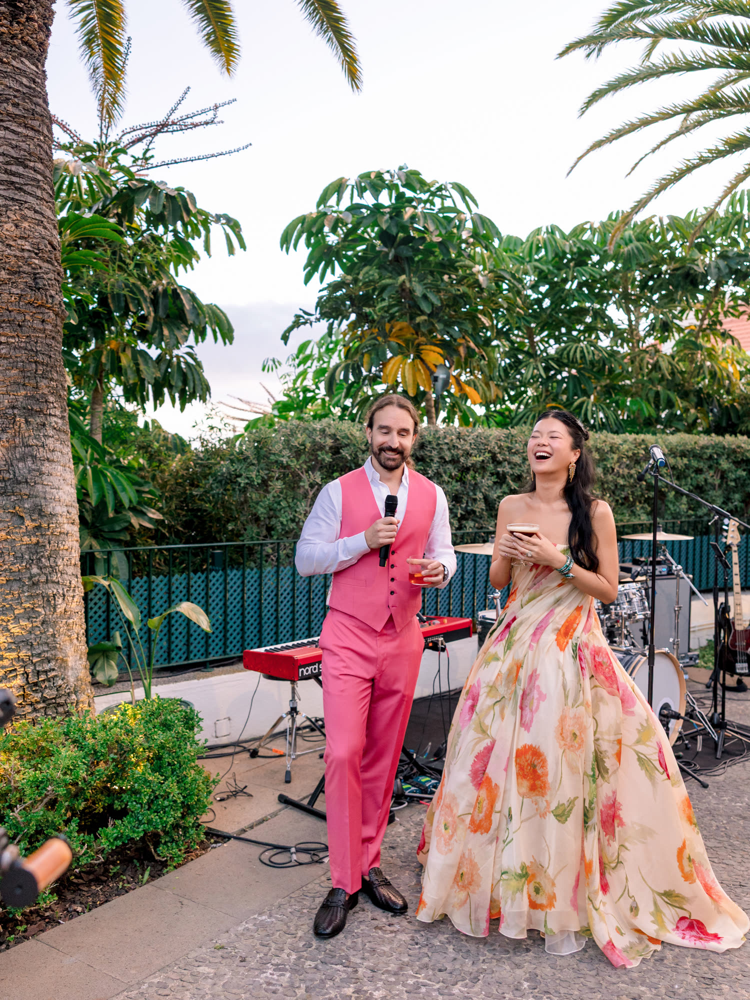
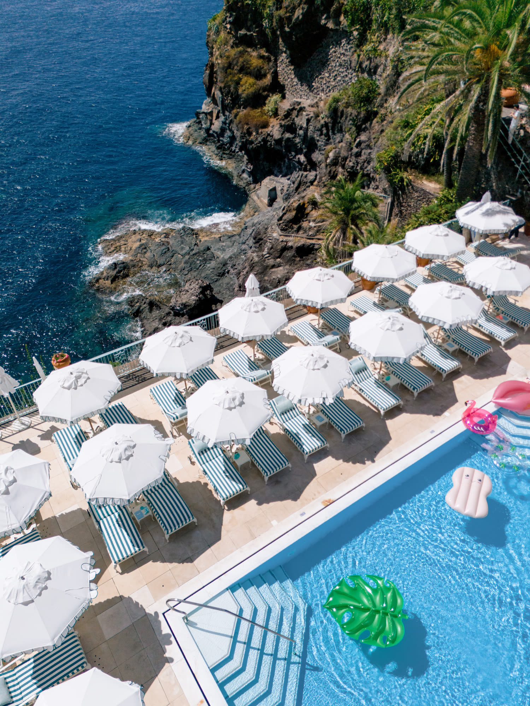
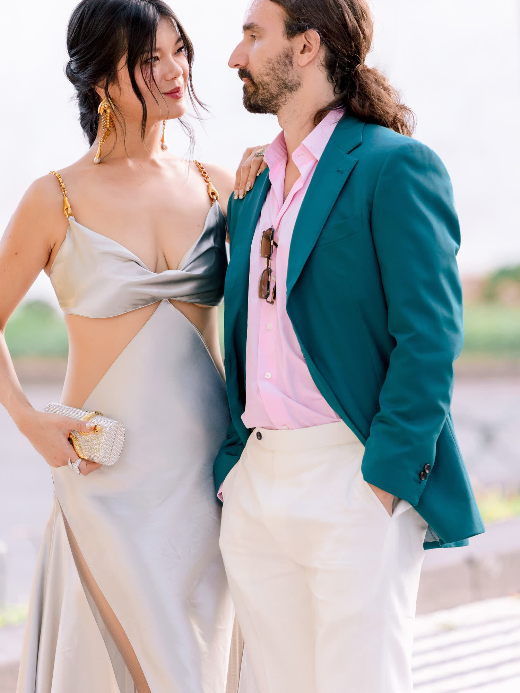
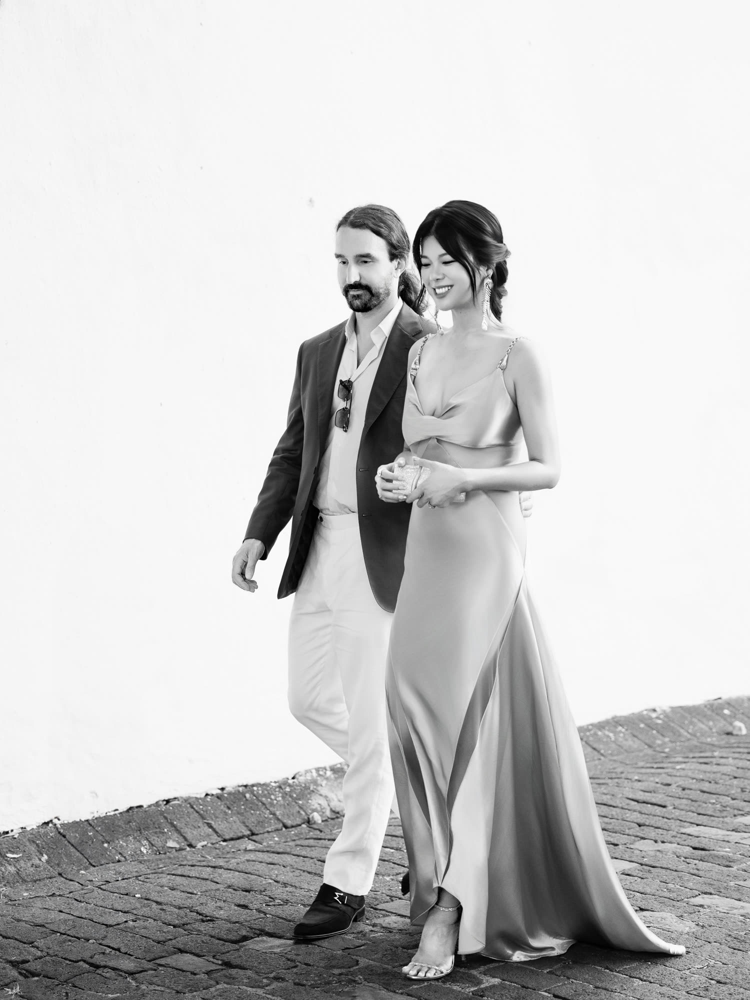
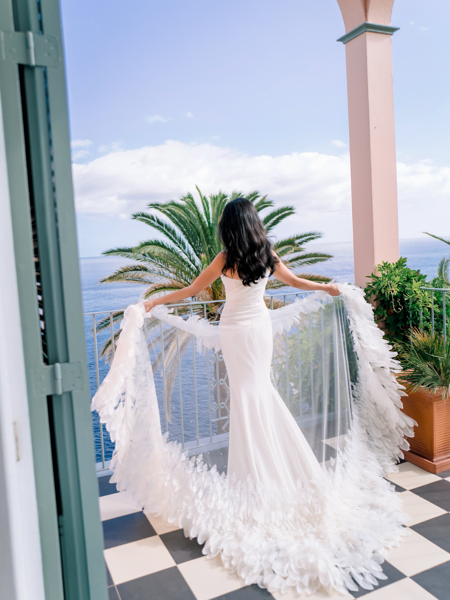
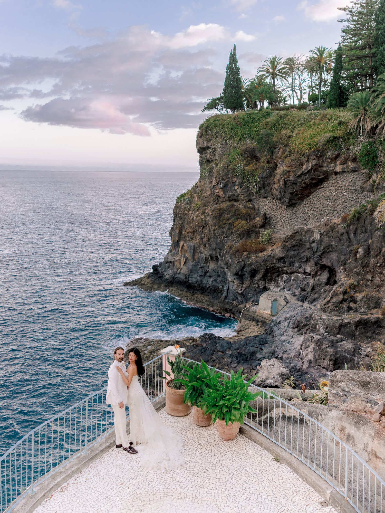
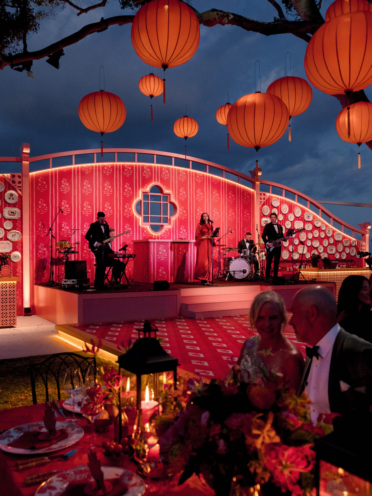
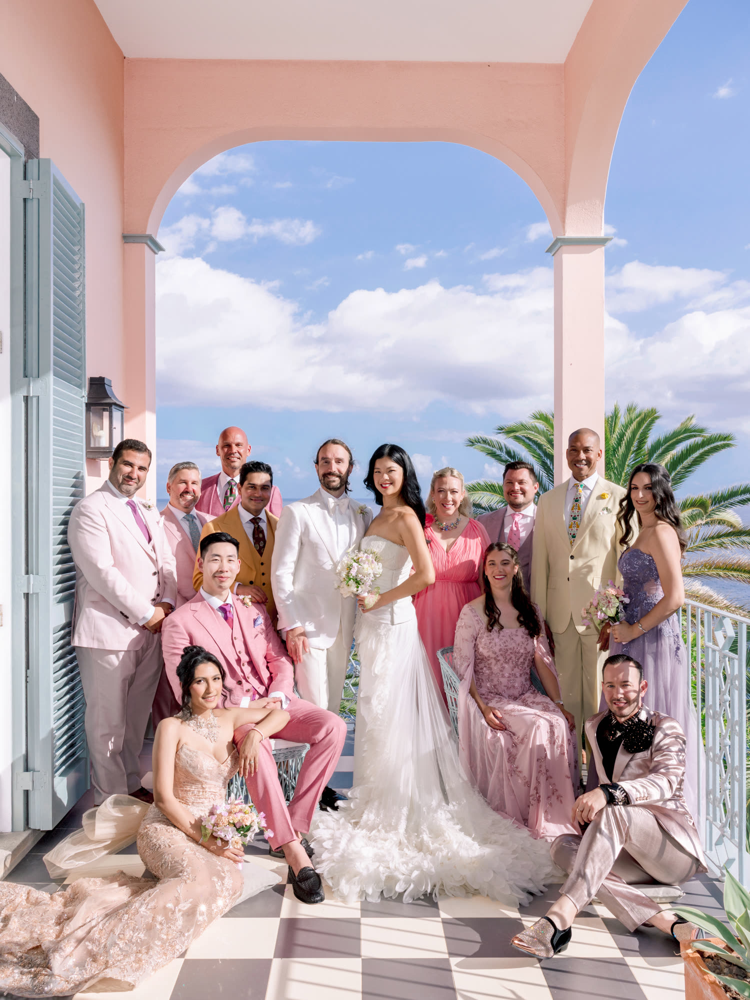
A question about your files? Write to us at contact@chromatafilms.com, we are happy to help.